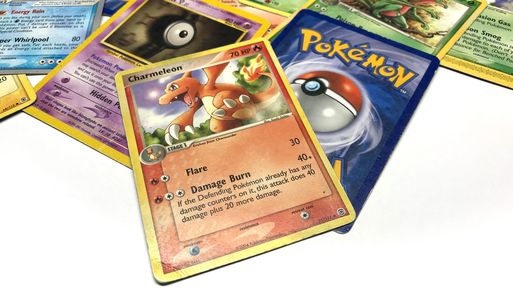

<!DOCTYPE html>
<html>
<head>
    <meta charset="UTF-8">
    <meta name="viewport" content="width=device-width, initial-scale=1.0">
    <link rel="stylesheet" href="https://use.typekit.net/wae4zuk.css">


  <title> Pokemon microsite</title>

  <link rel="stylesheet" href="css/styles.css"
</head>
    
</html>

<body>
    <nav>
        <a href="index.html">
        </a>
        <div class="nav-links"
        <ul>
            <li><a href="games.html">GAMES</a></li>
            <li><a href="anime.html">ANIME</a></li>
            <li><a href="cards.html">CARDS</a></li>
        </ul>
        </div>
    </nav>

    <div class="container">
        <br>
        <br>

        <h1>CARDS </h1>
        <br>
    
    <p class="home-p">
        The Pokémon Trading Card Game (TCG) is a collectible card game with a goal similar to a Pokémon battle in the video game series. Players use Pokémon cards, with individual strengths and weaknesses, in an attempt to defeat their opponent by "knocking out" their Pokémon cards. The game was published in North America by Wizards of the Coast in 1999. With the release of the Game Boy Advance video games Pokémon Ruby and Sapphire, the Pokémon Company took back the card game from Wizards of the Coast and started publishing the cards themselves. The Expedition expansion introduced the Pokémon-e Trading Card Game, where the cards (for the most part) were compatible with the Nintendo e-Reader. Nintendo discontinued its production of e-Reader compatible cards with the release of FireRed and LeafGreen. In 1998, Nintendo released a Game Boy Color version of the trading card game in Japan; Pokémon Trading Card Game was subsequently released to the US and Europe in 2000. The game included digital versions cards from the original set of cards and the first two expansions (Jungle and Fossil), as well as several cards exclusive to the game. A sequel was released in Japan in 2001.


    </p>

    

</div>


</body>


<footer>
    <div id=foot-container>
    <ul class="bottom">
        <li> <a href="https://en.wikipedia.org/wiki/Pok%C3%A9mon"> Content from: Pokémon Wikipedia</a></li>
    </ul>
    <div class="credits">
      <ul>
        <li><a>Interactions Foundations Fall 2021</a></li>
        <li><a>Creative Director: Tim Xu </a></li>
        <li><a>Designer, Developer: Layla Lee</a></li>
      </ul>
    </div>
  </div>
  </footer>
</html>